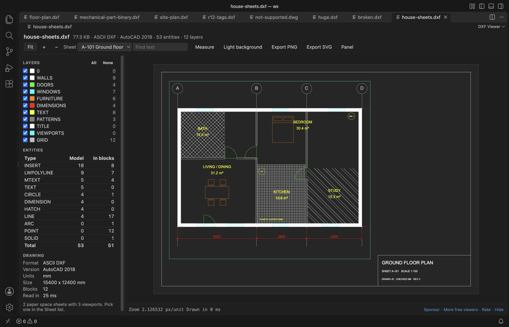

Handleidingen in het Nederlands
Een DXF-tekening openen in VS Code
Installeer de gratis DXF Viewer en klik op een .dxf-bestand. De viewer leest ASCII- en binaire DXF van R12 tot AutoCAD 2018, met blokken, tekst, maatvoering, arceringen en paper space-sheets, en je kunt lagen verbergen, tekst zoeken en meten. DWG-bestanden worden niet gelezen. Een .dwg opent een korte pagina met de versie en de manieren om een DXF-kopie op te slaan. Bekijken is gratis. Zovo Pro (eenmalig USD 19) voegt drie tools toe, Extract drawing data, Compare drawings en Folder inventory. Elke tool kun je 3 keer gratis proberen.
Gratis, MIT-licentie. Extensie-ID zovo.dxf-viewer, versie 0.3.2.
Deze handleiding is ook beschikbaar in English · Bahasa Indonesia · Čeština · Deutsch · Español · 日本語

Stappen in VS Code
- Installeer DXF Viewer via de Marketplace, of druk op Ctrl+P (Cmd+P op macOS) en voer
ext install zovo.dxf-vieweruit. - Klik in de Explorer op een
.dxf-bestand. Het opent in DXF Viewer. Het zijpaneel toont de lagen, de entiteitstypes en de gegevens van de tekening, zoals versie, eenheden en grootte. - Sleep om te pannen, scroll om te zoomen op de plek van de muisaanwijzer, en druk op F of dubbelklik om de tekening passend te maken. B wisselt tussen een donkere en een witte achtergrond.
- Heeft de tekening paper space, kies dan een layout in de lijst Sheet. Die wordt getoond zoals hij print, met het titelblok en de viewports op hun schaal.
- Vink een laag uit in het paneel Layers om hem te verbergen. Druk op Ctrl+F (Cmd+F op een Mac) om tekst, MTEXT of blokattributen te zoeken, en druk op M om tussen twee punten te meten.
- Klik op Export PNG of Export SVG om de weergave op te slaan. Sla je de DXF opnieuw op vanuit je CAD-programma, dan herlaadt de open weergave met dezelfde zoom, sheet en lagen.
Wat gratis is en wat Zovo Pro toevoegt
DXF-bestanden openen, sheets, lagen, tekst zoeken, meten, live herladen en export naar PNG of SVG zijn gratis. De viewer doet geen netwerkverzoeken en verandert de tekening nooit.
De inventaris leest elk .dxf-bestand in een map en de submappen, en slaat één CSV-rij per tekening op. Elke rij bevat de DXF-versie, eenheden, breedte en hoogte, lagen, entiteiten, blokken, tekst en de velden van het titelblok, zoals TITLE, DWG_NO, REV en DATE. Krijg je een map met tekeningen, dan zie je in één spreadsheet wat erin zit, zonder elk bestand te openen.
Inventory of a Folder of Drawings to CSV gebruiken (Zovo Pro)
- Klik in de Explorer met rechts op een map en kies "Inventory of a Folder of Drawings to CSV (Zovo Pro)". Of voer "DXF Viewer: Inventory of a Folder of Drawings to CSV (Zovo Pro)" uit vanuit het Command Palette en kies de map.
- Een melding toont de voortgang en kan worden geannuleerd. Kies daarna waar je de CSV wilt opslaan. De standaardnaam eindigt op
-dxf-inventory.csv. - Een poging telt pas als het CSV-bestand is opgeslagen, dus Cancel of Escape kost niets. Bestanden die niet gelezen konden worden, staan in de kolom Error.
Inventory of a Folder of Drawings to CSV werkt 3 keer gratis op je computer voordat om een licentie wordt gevraagd. Er is geen pop-up en geen aftelling.
Zovo Pro kost eenmalig USD 19. Het is geen abonnement, en de licentie zet de Pro-tools aan in alle Zovo-extensies, niet alleen in DXF Viewer. Na betaling met een kaart (Stripe) staat je licentiesleutel op de volgende pagina. Voer in VS Code "Zovo Pro: Enter Zovo Pro license key" uit vanuit het Command Palette en plak de sleutel. De sleutel wordt op je eigen computer gecontroleerd, zonder netwerkverbinding. Betaal je via GitHub Sponsors, kies dan het niveau "$19 one time" en voer daarna "Zovo Pro: I already paid: unlock with GitHub Sponsors" uit.
Een team van 5 personen betaalt eenmalig USD 59 (met een kaart). Alle regels en alle Pro-tools staan op de Zovo Pro-pagina (Engels).
Stappen in Cursor, Windsurf of VSCodium
- Open de Extensions-weergave met Ctrl+Shift+X (Cmd+Shift+X op macOS).
- Zoek
zovo.dxf-vieweren klik op Install. Cursor, Windsurf en VSCodium installeren extensies van Open VSX, waar deze extensiezovo/dxf-viewerheet. - Heeft je editor geen galerie, download dan het .vsix-bestand van de pagina op Open VSX en voer "Extensions: Install from VSIX..." uit.
- Daarna werkt alles zoals in VS Code.
Wat DXF Viewer doet
- ASCII- en binaire DXF, van R12 tot AutoCAD 2018.
- Lijnen, bogen, cirkels, ellipsen, polylijnen met bulges, splines, arceringen met patroon, TEXT, MTEXT, blokattributen, geneste blokken en maatvoering.
- Paper space-layouts, met elk viewport op zijn eigen schaal en draaiing, zonder de lagen die het bevriest.
- Grote bestanden, gelezen in een worker-thread. Een tekening van 24 MB met 600.000 lijnen laadt in ongeveer een seconde.
Wat het niet doet
- DWG-bestanden worden niet gelezen. Sla ze eerst op als DXF.
- 3D-entiteiten worden plat getekend, als bovenaanzicht, en 3DSOLID, REGION en BODY worden niet getekend.
- Tekst gebruikt een schreefloos lettertype, niet het SHX- of TrueType-lettertype uit het bestand, en lijndiktes worden niet gebruikt.
- Viewports worden als rechthoeken getekend, en kleurverlopen in arceringen worden een egale vulling.
- Bestanden boven 500 MB worden niet gelezen (instelling
dxfViewer.maxFileMB, tot 2048).
Veelgestelde vragen
Is het gratis?
DXF-bestanden openen, sheets, lagen, tekst zoeken, meten, live herladen en export naar PNG of SVG zijn gratis. De drie Pro-tools, Extract drawing data, Compare drawings en Folder inventory, kun je elk 3 keer gratis gebruiken. Daarna heb je Zovo Pro nodig, eenmalig USD 19 voor alle Zovo-extensies.
Kan het DWG-bestanden openen?
Nee. DWG is een gesloten formaat. Een .dwg-bestand opent een korte pagina met de versie en de stappen om een DXF-kopie op te slaan in AutoCAD, BricsCAD, LibreCAD, QCAD of de gratis ODA File Converter.
Kan ik de tekening bewerken?
Nee. De viewer is alleen-lezen. Hij schrijft alleen de exports die je in het opslagvenster kiest, en weigert een tekening te overschrijven.
Werkt het in Cursor?
Ja. DXF Viewer staat op Open VSX, dus Cursor, Windsurf en VSCodium kunnen de extensie installeren.
Meer informatie
De Engelse handleiding heeft meer details en andere opties. Elke functie en instelling staat op de pagina van DXF Viewer (Engels).
Feiten gecontroleerd op 13 november 2026 met de huidige versie in de Marketplace.